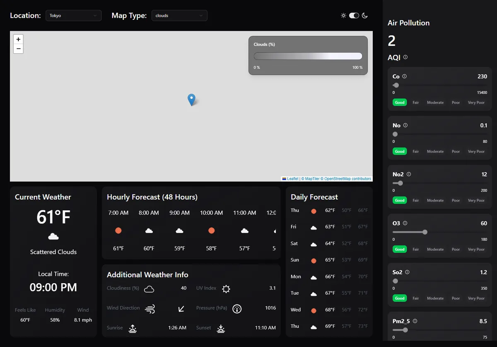

Remember the Theme & Match the Map
Save the theme, follow the system setting, and switch the MapTiler style with it.
Extension · built and browser-testedExtension: not in the video. This step builds on steps 25 and 26. The code was type-checked, linted (0 problems after this step), built and run in headless Chrome against the production build with mocked OpenWeather answers. The browser's system setting was light; the test toggled the switch, reloaded the page and recorded the theme, the saved value and the MapTiler style requests.
What that proves: the theme follows the system on the first visit, is remembered after a reload, and the map asks for the matching MapTiler style. What it does not prove: how the MapTiler base maps look (tiles were blocked offline, so the screenshots show a grey map) or every browser's privacy settings.
Goal
The light/dark switch from step 24 works, but it has three rough edges:
- It forgets.
useState<Theme>("dark")starts dark on every load. Choose light, reload, and you're back in dark. - It ignores the system. If your computer or phone is set to light mode, the app still opens dark.
- The map doesn't follow. The MapTiler base map is always
"basic-dark", so in light mode you get a dark map in a light page.
There is also the last lint error from step 25: ThemeProvider.tsx exports both a component and a hook. In this step you fix all four.
New to localStorage? A tiny, permanent key-value store in the browser
localStorage lets a website save short strings in the browser, per site. They survive reloads and browser restarts until the user clears site data.
localStorage.setItem("weather-theme", "dark") // save
localStorage.getItem("weather-theme") // "dark" (or null if never saved)Three things to know: values are always strings; anything you read back may be missing or not what you expect (an old version, a user editing it in DevTools), so check it; and access can throw, for example when the browser blocks storage for the site or in some private-browsing setups. That's why the code below wraps every call in try/catch. Never store secrets in it: any script on the page can read it.
New to prefers-color-scheme? Reading the system's light/dark setting
Operating systems and browsers have a light/dark appearance setting. Websites can read it through the CSS media feature prefers-color-scheme. In CSS you'd write @media (prefers-color-scheme: light) { … }. In JavaScript, window.matchMedia("(prefers-color-scheme: light)") returns an object whose .matches is true when the user prefers light. This app's Tailwind setup switches themes with a dark class on <html> instead (step 24's @custom-variant dark), so we read the preference once in JavaScript and set that class ourselves.
Actions
- Create
src/hooks/useTheme.tsMake a new folder
hooksinsidesrcand a fileuseTheme.tsin it (plain.ts: it contains no JSX). The context and the hook move here fromThemeProvider.tsx. - Replace
src/components/ThemeProvider.tsxIt now imports the context, chooses the starting theme and saves changes.
- Update two imports
In
LightDarkToggle.tsx, importuseThemefrom"../hooks/useTheme".Map.tsxuses it too (next section). - Make the MapTiler style follow the theme in
src/components/Map.tsx
Move the context and the hook (useTheme.ts)
In the repo, ThemeProvider.tsx ends with an exported useTheme function. ESLint reported:
src\components\ThemeProvider.tsx
45:14 error Fast refresh only works when a file only exports components. Use a new file
to share constants or functions between components react-refresh/only-export-components
✖ 1 problem (1 error, 0 warnings)Fast Refresh is the part of Vite's hot module replacement that swaps a changed React component into the running page without losing its state. It can only do that safely for files that export nothing but components. If a file also exports a hook or a constant, an edit to it reloads more than necessary and can reset state. The rule asks you to split the file, so that's what we do:
import { createContext, useContext } from "react"
export type Theme = "light" | "dark"
type ThemeContextType = {
theme: Theme
toggleTheme: () => void
}
// Kept in its own file: React Fast Refresh works best when component files only export components.
export const ThemeContext = createContext<ThemeContextType | undefined>(undefined)
export const useTheme = () => {
const context = useContext(ThemeContext)
if (!context) throw new Error("useTheme must be used within a ThemeProvider")
return context
}| Line(s) | Code | What it does & why |
|---|---|---|
| 1 | import { createContext, useContext } from "react" | The two React functions for context: one creates it, the other reads it. |
| 3 | export type Theme = "light" | "dark" | A union type: a theme can only be one of these two strings. Now exported, because ThemeProvider.tsx needs it too. |
| 5–8 | type ThemeContextType = { theme: Theme toggleTheme: () => void} | What the context provides: the current theme and a function to switch it. Same as step 24. |
| 10 | // Kept in its own file: React Fast Refresh works best ... | Explains why this file exists, so nobody merges it back. |
| 11 | export const ThemeContext = createContext<ThemeContextType | undefined>(undefined) | The context object, now exported so the provider in the other file can use ThemeContext.Provider. The default value undefined means "no provider above me". |
| 13–17 | export const useTheme = () => { const context = useContext(ThemeContext) if (!context) throw new Error("useTheme must be used within a ThemeProvider") return context} | The custom hook from step 24, unchanged, just moved. It reads the context with useContext and throws a clear error if a component uses it outside the provider. After the check, TypeScript knows context is not undefined. |
hooks/.Choose, apply and save the theme (ThemeProvider.tsx)
import { useEffect, useState, type ReactNode } from "react"
import { ThemeContext, type Theme } from "../hooks/useTheme"
type Props = {
children: ReactNode
}
const STORAGE_KEY = "weather-theme"
// 1. the choice saved last time, 2. the operating system setting, 3. dark
function getInitialTheme(): Theme {
try {
const saved = localStorage.getItem(STORAGE_KEY)
if (saved === "light" || saved === "dark") return saved
} catch {
// storage can be blocked (private mode, browser settings): fall through
}
if (window.matchMedia?.("(prefers-color-scheme: light)").matches) return "light"
return "dark"
}
export default function ThemeProvider({ children }: Props) {
const [theme, setTheme] = useState<Theme>(getInitialTheme)
const toggleTheme = () => {
setTheme((prev) => (prev === "dark" ? "light" : "dark"))
}
useEffect(() => {
document.documentElement.classList.toggle("dark", theme === "dark")
try {
localStorage.setItem(STORAGE_KEY, theme)
} catch {
// not saved, but the app still works
}
}, [theme])
return (
<ThemeContext.Provider value={{ theme, toggleTheme }}>
{children}
</ThemeContext.Provider>
)
}Line by line
| Line(s) | Code | What it does & why |
|---|---|---|
| 1 | import { useEffect, useState, type ReactNode } from "react" | createContext and useContext moved to useTheme.ts, so only these remain. |
| 2 | import { ThemeContext, type Theme } from "../hooks/useTheme" | The context object and the Theme type from the new file. ../ goes up from components to src. |
| 4–6 | type Props = { children: ReactNode } | Unchanged: the provider wraps the app. |
| 8 | const STORAGE_KEY = "weather-theme" | The name under which the choice is saved. A constant avoids typos between the read (line 13) and the write (line 32). A specific name avoids clashing with other apps on the same address (for example several projects on localhost:5173). |
| 10 | // 1. the choice saved last time, 2. the operating system setting, 3. dark | The order from the diagram above. |
| 11 | function getInitialTheme(): Theme { | A plain function (outside the component) that works out the starting theme. The return type guarantees it only returns "light" or "dark". |
| 12–14 | try { const saved = localStorage.getItem(STORAGE_KEY) if (saved === "light" || saved === "dark") return saved | Reads the saved value. Only the two valid strings are accepted; null (never saved) or anything else falls through to the next rule. Thanks to the check, TypeScript knows saved is a Theme on the return. |
| 15–17 | } catch { // storage can be blocked ...} | If the browser blocks storage, getItem throws. We ignore the error and continue: the app should still work, just without memory. catch without (e) is allowed when you don't use the error. |
| 18 | if (window.matchMedia?.("(prefers-color-scheme: light)").matches) return "light" | Asks the browser whether the system prefers light. matchMedia?.(…) uses optional chaining on a function call: if matchMedia doesn't exist (some test environments), the expression is undefined and we move on instead of crashing. |
| 19 | return "dark" | Nothing saved and no light preference: keep the video's default. |
| 23 | const [theme, setTheme] = useState<Theme>(getInitialTheme) | Note: getInitialTheme, not getInitialTheme(). Passing the function itself is a "lazy initial state": useState calls it only on the first render. With the parentheses it would read storage on every render and throw the result away. |
| 25–27 | const toggleTheme = () => { setTheme((prev) => (prev === "dark" ? "light" : "dark"))} | Unchanged from step 24: flips the theme using the previous value. |
| 29 | useEffect(() => { | Runs after a render whenever theme changed (dependency list on line 36). Changing the page's <html> element and storage are side effects, so they belong in an effect. |
| 30 | document.documentElement.classList.toggle("dark", theme === "dark") | classList.toggle(name, force) adds the class when force is true and removes it when false. One line replaces step 24's if/else. Tailwind's dark: classes react to this class (dark variant). |
| 31–35 | try { localStorage.setItem(STORAGE_KEY, theme)} catch { // not saved, but the app still works} | Saves the current theme. Writing can throw too (blocked storage, storage full), so it gets its own try/catch. This also saves the starting theme on the very first visit, which is harmless. |
| 36 | }, [theme]) | Re-run only when the theme changes. |
| 38–42 | <ThemeContext.Provider value={{ theme, toggleTheme }}> | Unchanged: provides the theme to every component inside. |
"weather-theme", and step 6 runs inside getInitialTheme(). The effect writes the choice; the lazy initial state reads it back on the next visit.The toggle itself only changes its import (line 4):
import { Switch } from "./ui/switch"
import Sun from "/src/assets/sun.svg?react"
import Moon from "/src/assets/moon.svg?react"
import { useTheme } from "../hooks/useTheme"
export default function LightDarkToggle() {
const { theme, toggleTheme } = useTheme()
return (
<div className="flex items-center gap-2">
<Sun className="size-5" />
<Switch checked={theme === "dark"} onCheckedChange={toggleTheme} />
<Moon className="size-5" />
</div>
)
}| Line(s) | Code | What it does & why |
|---|---|---|
| 1–3 | import { Switch } ...import Sun ... ?reactimport Moon ... ?react | Unchanged: shadcn's switch and the two icons imported as components through svgr. |
| 4 | import { useTheme } from "../hooks/useTheme" | The only change: the hook's new home. |
| 6 | export default function LightDarkToggle() { | No props (the empty Props was removed in step 25). |
| 7 | const { theme, toggleTheme } = useTheme() | Reads the theme and the toggle function from context. |
| 11 | <Switch checked={theme === "dark"} onCheckedChange={toggleTheme} /> | The switch is "on" in dark mode; flipping it calls toggleTheme. Because theme now starts from the saved value, the switch is in the right position right after a reload. |
Match the map to the theme (Map.tsx)
Since step 17, MapTileLayer creates a MapTiler layer with the fixed style "basic-dark". Now it reads the theme and picks the style from the SDK's MapStyle constants. MapStyle.BASIC.DARK is the style id "basic-v2-dark" and MapStyle.BASIC.LIGHT is "basic-v2-light". Using the constants instead of a hand-typed string means a typo becomes a TypeScript error, and the SDK keeps the ids up to date.
import { MapContainer, Marker, TileLayer, useMap, useMapEvents } from "react-leaflet"
import L from "leaflet"
import "leaflet/dist/leaflet.css"
import markerIconUrl from "leaflet/dist/images/marker-icon.png"
import markerIcon2xUrl from "leaflet/dist/images/marker-icon-2x.png"
import markerShadowUrl from "leaflet/dist/images/marker-shadow.png"
import type { Coords } from "../types"
import { useEffect } from "react"
import { MaptilerLayer, MapStyle } from "@maptiler/leaflet-maptilersdk"
import { useTheme } from "../hooks/useTheme"
const API_KEY = import.meta.env.VITE_API_KEY
const MAPTILER_KEY = import.meta.env.VITE_MAPTILER_KEY
// Import the marker images so Vite bundles them. Leaflet's automatic image path
// breaks in production builds, where Vite inlines the small images as data URLs.
const markerIcon = L.icon({
iconUrl: markerIconUrl,
iconRetinaUrl: markerIcon2xUrl,
shadowUrl: markerShadowUrl,
iconSize: [25, 41],
iconAnchor: [12, 41],
shadowSize: [41, 41],
})
type Props = {
coords: Coords
onMapClick: (lat: number, lon: number) => void
mapType: string
}
export default function Map({ coords, onMapClick, mapType }: Props) {
const { lat, lon } = coords
return (
<MapContainer
center={[lat, lon]}
zoom={5}
style={{ width: "100%", height: "100%" }}
>
<MapClick onMapClick={onMapClick} coords={coords} />
<MapTileLayer />
<TileLayer
opacity={0.7}
url={`https://tile.openweathermap.org/map/${mapType}/{z}/{x}/{y}.png?appid=${API_KEY}`}
/>
<Marker position={[lat, lon]} icon={markerIcon} />
</MapContainer>
)
}
function MapClick({
onMapClick,
coords,
}: {
onMapClick: (lat: number, lon: number) => void
coords: Coords
}) {
// useMapEvents registers the click listener once and removes it on unmount
const map = useMapEvents({
click(e) {
onMapClick(e.latlng.lat, e.latlng.lng)
},
})
// pan only when the coordinates change, not on every render
useEffect(() => {
map.panTo([coords.lat, coords.lon])
}, [map, coords.lat, coords.lon])
return null
}
function MapTileLayer() {
const map = useMap()
const { theme } = useTheme()
useEffect(() => {
if (!MAPTILER_KEY) return // no key: keep the weather layer only
const tileLayer = new MaptilerLayer({
style: theme === "dark" ? MapStyle.BASIC.DARK : MapStyle.BASIC.LIGHT, // base map follows the theme
apiKey: MAPTILER_KEY,
})
tileLayer.addTo(map)
return () => {
map.removeLayer(tileLayer)
}
}, [map, theme])
return null
}Line by line (the changed lines)
| Line(s) | Code | What it does & why |
|---|---|---|
| 9 | import { MaptilerLayer, MapStyle } from "@maptiler/leaflet-maptilersdk" | Adds MapStyle, an object of named style constants from the MapTiler Leaflet SDK. |
| 10 | import { useTheme } from "../hooks/useTheme" | The map can read the theme because it renders inside ThemeProvider (set up in main.tsx). |
| 75 | const { theme } = useTheme() | Reads the current theme in MapTileLayer. When the user toggles, this component re-renders with the new value. |
| 78 | if (!MAPTILER_KEY) return // no key: ... | From step 25: no key, no MapTiler layer. |
| 79–82 | const tileLayer = new MaptilerLayer({ style: theme === "dark" ? MapStyle.BASIC.DARK : MapStyle.BASIC.LIGHT, apiKey: MAPTILER_KEY,}) | Chooses the dark or light "basic" style. A MapTiler layer's style is set when it's created, so to switch styles we create a new layer (next rows). |
| 83 | tileLayer.addTo(map) | Adds the layer to the Leaflet map. |
| 85–87 | return () => { map.removeLayer(tileLayer)} | The effect's cleanup. React runs it before running the effect again and when the component unmounts. So on every theme change the old layer is removed before the new one is added; without it, layers would pile up on top of each other. |
| 88 | }, [map, theme]) | theme is new in the dependency list. Without it the effect would run only once and the map would keep its first style forever (and the React hooks lint rule would warn about the missing dependency). |
basic-v2-light style, then basic-v2-dark after the toggle.What the test showed
The browser test opened the page with the system set to light, recorded the <html> class, clicked the switch, reloaded, and recorded again:
before: html class = "" (light: no "dark" class, from the system setting)
after toggle: localStorage "weather-theme" = "dark"
after reload: html class = "dark" (remembered)
MapTiler style requests: basic-v2-light ... then basic-v2-darkAnd npm run lint now prints no problems at all.


What you should see
npm run lint: no problems (verified).- On first visit the app follows your system's light/dark setting.
- Toggle, reload: the theme stays. In DevTools → Application → Local Storage you'll find
weather-themewithlightordark. - With a MapTiler key: the base map is light in light mode and dark in dark mode.
Common mistakes
useState<Theme>(getInitialTheme()): works, but runs on every render. Pass the function without().- "useTheme must be used within a ThemeProvider": a component calling
useThemeis rendered outside<ThemeProvider>. Checkmain.tsx. - Old import path:
import { useTheme } from "./ThemeProvider"now fails with "has no exported member 'useTheme'". Use../hooks/useTheme. - Forgetting
themein the effect's dependency list: the map style never changes. - Testing "first visit" with an old saved value: the saved choice wins over the system. Delete
weather-themein DevTools to see the system setting take effect. - A short flash of the dark theme on load: the class is set in an effect, after React's first render. For this app the flash is brief; removing it completely would need a small script in
index.htmlthat sets the class before React starts.
- The starting theme comes from: saved choice, then
prefers-color-scheme, then dark. localStoragereads and writes are wrapped intry/catch; only valid values are accepted.useState(getInitialTheme)(lazy initial state) reads storage once.- Context and hook moved to
src/hooks/useTheme.ts: the last lint error is gone. - The MapTiler layer is recreated with
MapStyle.BASIC.DARKor.LIGHTwhen the theme changes; the effect's cleanup removes the old layer.